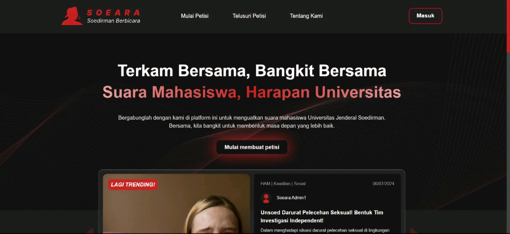
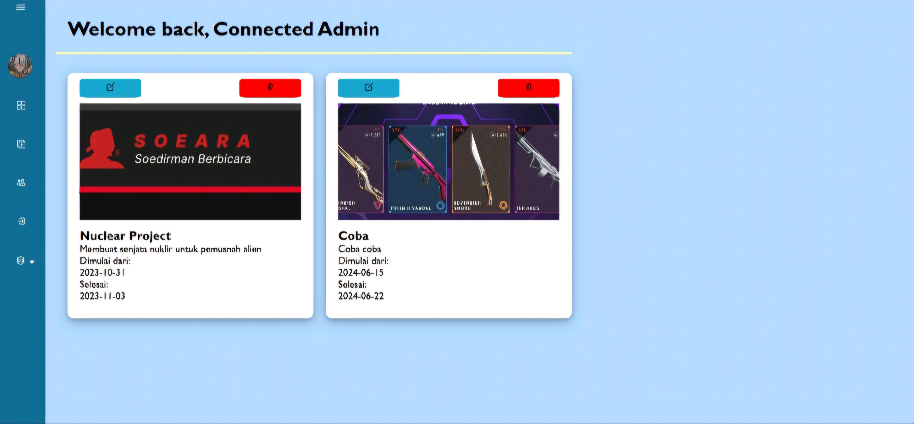

Soeara: Website Petisi Online Mahasiswa UNSOED
Team Project
Soeara (Soedirman Berbicara) adalah platform petisi yang bertujuan untuk memberikan suara kepada komunitas Universitas Jenderal Soedirman (Unsoed) dan mempromosikan perubahan positif dalam lingkungan kampus. Kami percaya bahwa setiap individu memiliki hak untuk didengar dan untuk memperjuangkan perubahan yang mereka yakini. Di Soeara, kami berkomitmen untuk memberdayakan mahasiswa, staf, dan alumni Unsoed untuk berbicara tentang isu-isu yang penting bagi mereka.

Connected: Website Manajemen Proyek
Team Project
Proyek ini bertujuan untuk membangun website manajemen proyek sederhana untuk perusahaan fiktif. Website ini memungkinkan pengguna untuk melakukan berbagai operasi CRUD pada data proyek, seperti membuat proyek baru, menampilkan detail proyek, mengedit proyek, dan menghapus proyek.